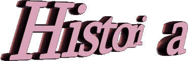
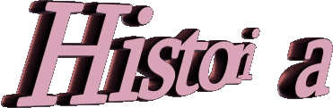
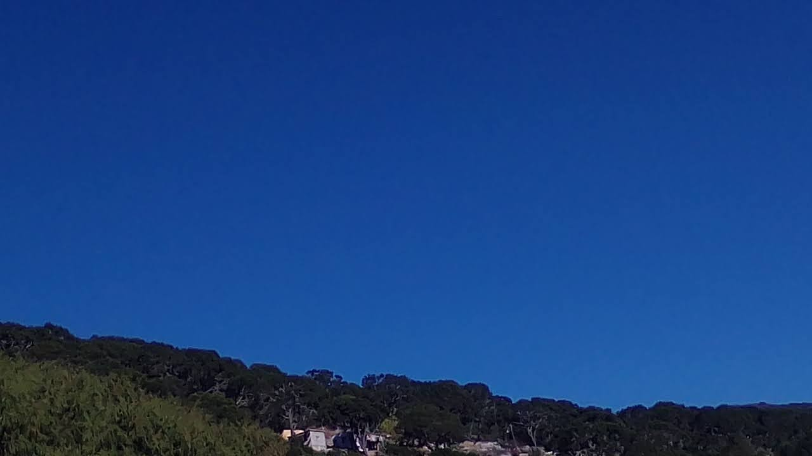

Antes del año 1910 llegaron los antepasados llamados chichimecas donde unos se desplazaron a el lugar denominado el chiquero, otros en el maguey verde y los demas en el agua.

La fundación : refiere a una voluntad política o social, más allá de la estructura física y material. Una ciudad puede ser fundada por unas pocas personas y algunas edificaciones menores, pese a que, con el correr del tiempo, la estructura alcance un desarrollo mucho mayor.


Segun el senso del 2020 hay un total de 249 personas que conforman la comunidad del durazno con un total de 127 mujeres y 122 hombres.
Los ciudadanos se dividen en 105 menores de edad y 144 adultos, de cuales 37 tienen más de 60 años.

 

El origen viene antes de 1910 los antepasasos chichimecas llegaron a el lugar
en el cual decidieron vivir ya que les provenia de agua al contar con un yacimiento de agua al igual que los recursos para comer y poder vivir.
Al pasar del tiempo los pobladores que ya se empezaron a colonizar con los primeros españoles llegados a Atarjea ellos decidieron que cada uno le pondria un nombre al lugar donde vivian haci fue como nacieron los subnombres como el gallo, el barro, el maguey verde, el agua y el chiquero.
Con el paso del tiempo y debido a las necesidades de cada uno de los habitantes decidieron llegar y reunirse como una sola comunidad a la cual lleva el nombre de el Durazno cuyo nombre nacio a raiz de que un gran arbol de durazno estaba en el lugar denominado el agua, el cual era un simbolo para la comunidad hasta que una gran cresiente se llevo aquel arbol dejando solo en nombre el durazno.
Haci como se tiene el nombe de los hombres a lo que decidieron moverse y crear una sola comunidad los cuales fueron:
Don Maclovio "N",Don Rosario "N", La Señora josefa "N" Señor cayetano "N"y Rosario ramos; Los cuales llevaron y formaron lo que ahora se conose como el durazno.
en actualidad solo quedaron los nombres de esa comunidad como barrios o nombres para identificarse pero con la esencia de aquella gente que vivio ahi .
